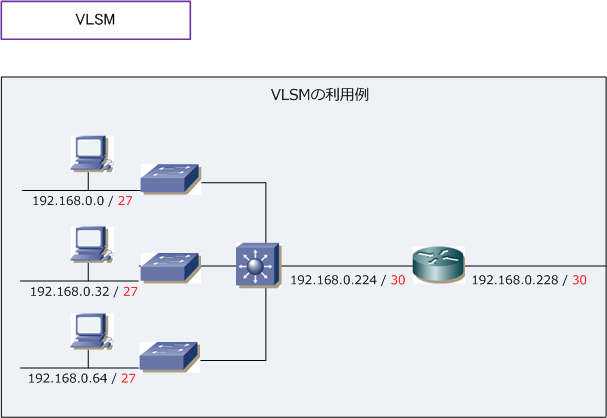
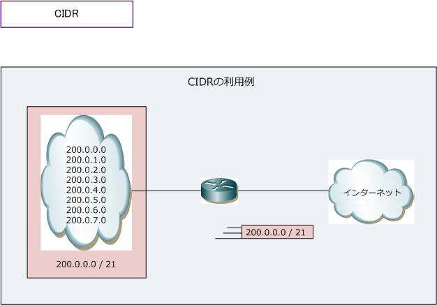
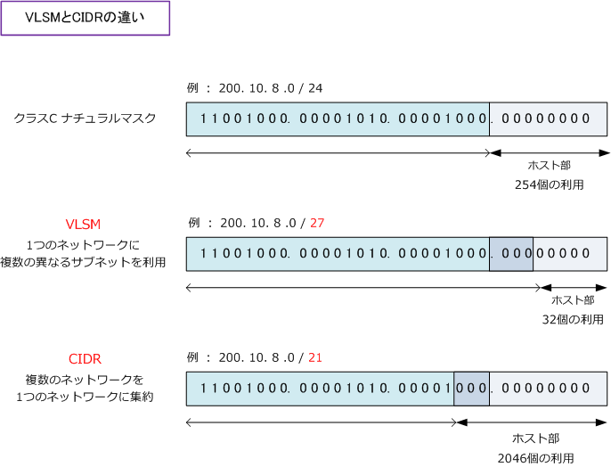
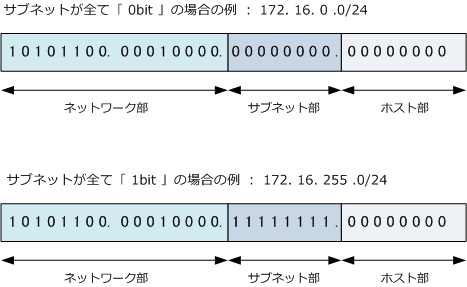

IP address - VLSM / CIDR / ip subnet-zero
IPアドレス - VLSM とは
VLSM（ Variable Length Subnet Mask ）とは、1つのIPネットワークをサブネットに分割する際に、 複数の長さのサブネットマスクを利用する技術です。VLSMは可変長サブネットマスクとも呼ばれます。 ネットワークを分割する時に例えば「 /27 と /30 」の異なるサブネットを同時に利用する構成のこと。

このように、VLSMはクラスの概念にとらわれないクラスレスアドレッシングの手法の1つと言えます。 VLSMを利用することで、効率的なIPアドレッシングが実現できるのですが、VLSMを対応していない クラスフルルーティングプロトコル（RIPv1）が稼動しているネットワークではVLSMは使用できません。
IPアドレス - CIDR とは
CIDR（Classless InterDomain Routing）とは、IPネットワークの経路情報を集約する際にクラスの概念を なくした技術のことです。CIDRにより複数のクラスCアドレスを1つのネットワークに集約することができ、 集約したネットワークは SuperNet（元のクラスのナチュラルマスクよりも短いマスクの経路）と言います。
CIDRによって、例えば「200.0.0.0/24」～「200.0.7.0/24」の8つのネットワークを、1つのネットワークに 集約をして「 200.0.0.0/21 」として扱うことができます。例えばインターネット上である組織がクラスCの ネットワークではIPアドレスが足らないことからクラスBのネットワークを取得を希望した場合に、クラスBの ネットワークを付与するのではなく、必要としているIPアドレスの数と同じくらいの数となるよう、連続する 複数のクラスCのネットワークを、1つのネットワークとして割り当てればIPアドレス空間を有効利用できます。

※ ルータは8つのルートを処理するのではなく、CIDRにより1つのルートを処理すればいいのでルータの負荷軽減となります。
これがCIDRの本来の意味なのですが、広義ではクラスを使用しないIPアドレッシングのことでもあります。 ただし、CIDRについては間違った解説が非常に多いので注意が必要です。
VLSMの場合は複数の異なるサブネットを作成していく時に「ホスト部のビット」を消費していくのに対し CIDRの場合は複数のネットワークを1つのネットワークにする時に、「ネットワーク部」のビットを消費 していきます。CIDRでは、1つの大きなネットワークを作成するためにホスト部のビットを増やしてます。

IPアドレス - ゼロサブネットとは
ゼロサブネットとは、サブネット部が全て 0 bitのネットワークのことです。例えば「 172.16.10.0/24 」 の場合ではサブネット部が全て 0bit になりませんが、「 172.16.0.0/24 」の場合はサブネット部が全て 0bit になります。このようなサブネットをゼロサブネットと言います。従来のサブネット計画においては、 このゼロサブネットと、サブネット部が全て「 1bit 」のネットワークの使用は推奨されていませんでした。

詳細は以下で確認頂きたいのですが、サブネットが全て「0bit」である「172.16.0.0/24」のサブネットは もとのネットワーク「 172.16.0.0/16 」とネットワークアドレスが同じで混同してしまいます。また、 サブネットが全て「1bit」の「172.16.255.0/24」のサブネットはもとのネットワーク「172.16.0.0/16」 とブロードキャストアドレスが同じであるため混同してしまいます。しかし、現在のネットワーク機器では これらの問題が解決しておりサブネット計画で全て 0 ビットのサブネット、全て 1 ビットのサブネットは 使用することが可能です。
| サブネットが全て 「 0bit 」 の場合 | ||
|---|---|---|
| IPアドレスの例 | ネットワークアドレス | ブロードキャストアドレス |
| 172.16.0.0/24 | 172.16.0.0 | 172.16.0.255 |
| 172.16.0.0/16 | 172.16.0.0 | 172.16.255.255 |
| サブネットが全て 「 1bit 」 の場合 | ||
|---|---|---|
| IPアドレスの例 | ネットワークアドレス | ブロードキャストアドレス |
| 172.16.255.0/24 | 172.16.255.0 | 172.16.255.255 |
| 172.16.0.0/16 | 172.16.0.0 | 172.16.255.255 |
Ciscoルータでも、IOS12.0以降では、ip subnet-zeroというコマンドがデフォルトで有効になっているので デフォルトで全て0ビットのサブネット、全て1ビットのサブネットは使用できます。逆に、 ip subnet-zero が有効でない機器ではゼロサブネットなどは使えないので、サブネット計算で算出結果から「-2」が必要です。
Cisco(config)# ip subnet-zero